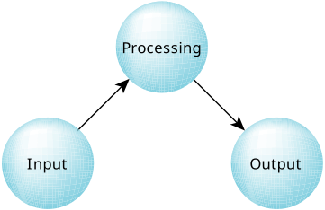

Let's first understand the situation from a multiple process,
one-thread-per-process outlook.
In this case, we'd have three processes, literally an input process,
a processing
process, and an output process.

This is the most highly abstracted form, and the most loosely coupled.
The input
process has no real binding
with either of
the processing
or output
processes—it's
simply responsible for gathering input and somehow giving it to the next stage
(the processing
stage).
We could say the same thing of the processing
and output
processes—they too have no real binding with each other.
We are also assuming in this example that the communication path
(i.e., the input-to-processing and the processing-to-output data flow)
is accomplished over some connection-oriented protocol
(e.g., pipes, POSIX message queues—whatever).